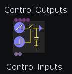
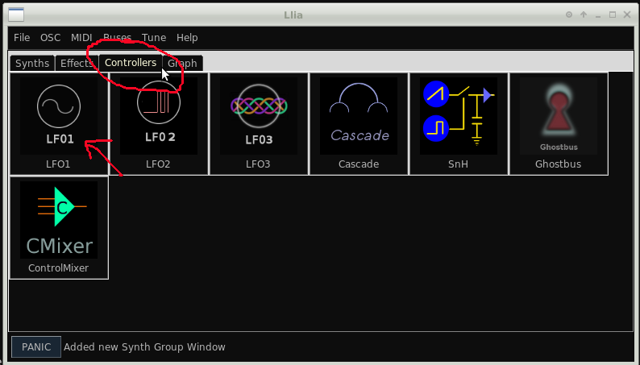
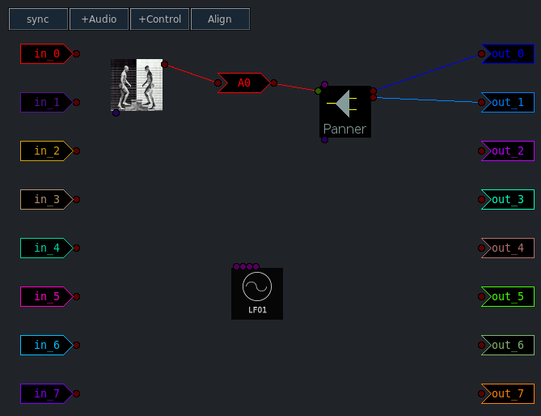
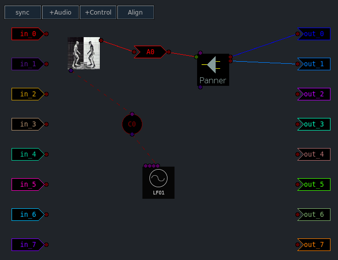
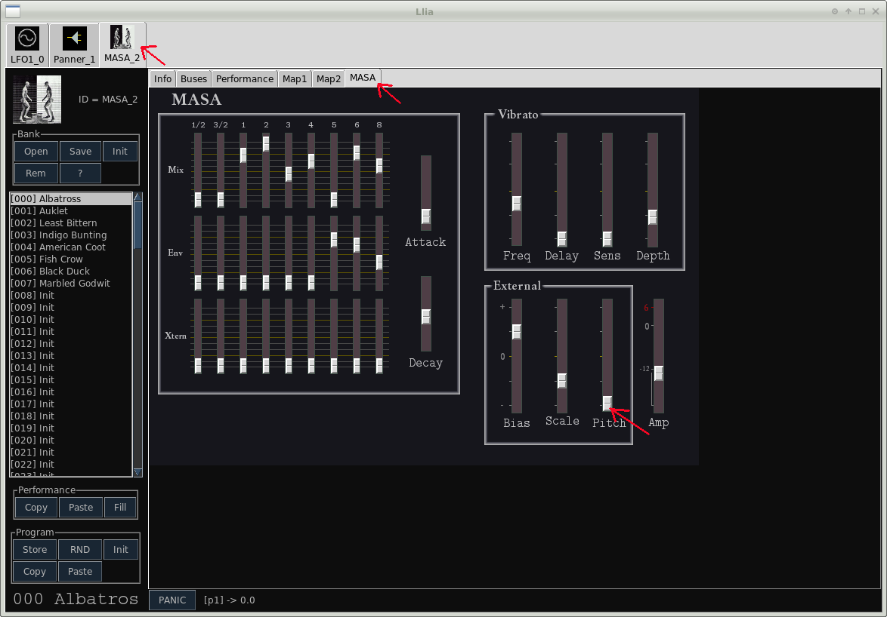
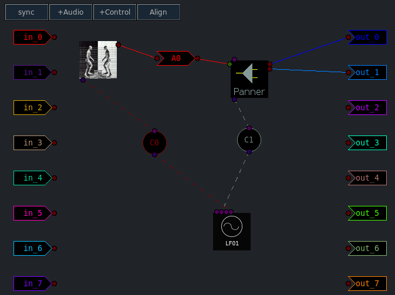
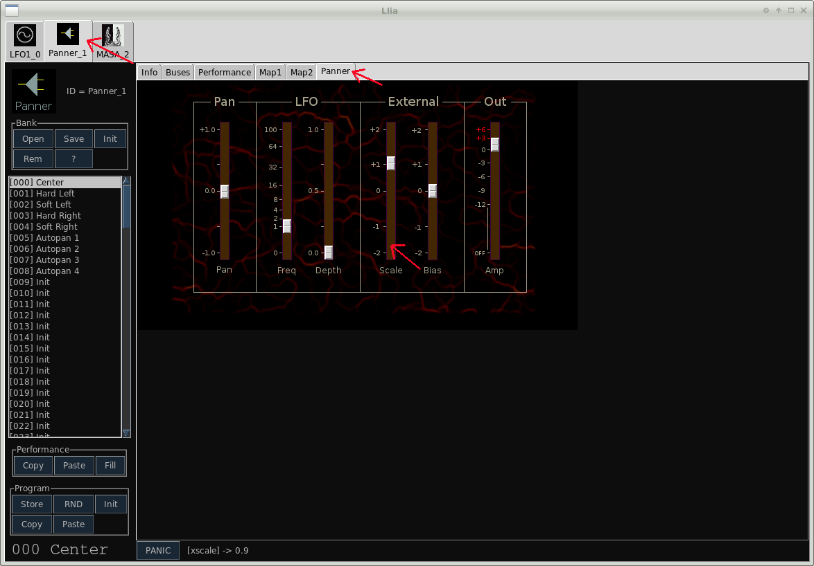
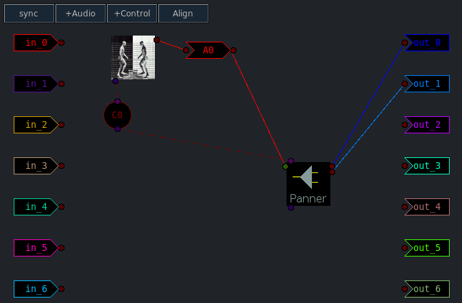

Llia Control Synths
Previous( effects2 ) Next( graph ) Home Contents
To conserve resources most synthesis systems, including SuperCollider, operate on at least two separate time scales
- Audio
- Control
A common audio rate is 44100 Hz which gives a time resolution of about 45 micro-seconds. Many signals, such as LFOs, envelopes, user input etc, do not require anywhere near this level of resolution. To save processor time these signals are updated at a much slower control rate. A typical control rate is about 1 tenth the audio rate, for every 10 audio samples the control signals are updated once.
Llia provides several control rate synths which do not process or generate audio. Instead they influence how other synths (including other control synths) operate.
As with audio rate synths, the order in which two control synths are created is meaningful but it is more relaxed. Connections to and between control synths should always work, however there may be different results if the creation order of the control synths is different. verify this
Creating a control synth is no different from any other synth. There will be no audio inputs or outputs, and there will be at least one control output, and perhaps one or more control inputs. Control outputs appear on the top of graph icons, control inputs are on the bottom.
For illustration we'll use an LFO1 first for vibrato and then for combined vibrato and panning.
From the main window, select the Controllers tab and add an instance of LFO1.
Switching to the graph screen note that LFO1 has several outputs. When the mouse pointer moves into an output(or input) port, information about that port is displayed in the area to the left of the graph.

The port names can at times be a bit cryptic but you can always consult the synth documentation for details. Typically the main output will have a name such as "outbus". For LFO1, which is actually three LFOs in one, there are outputs for each individual LFO and a main output which combines the three signals.
Next from the Effects tab create an instance of Panner and from the Synth tab add a copy of MASA. Using an audio bus patch MASA to the panner input, the graph should now look something like this:
In the group window select each synth in turn and select the following programs:
- LFO1 [000] "Delayed vibrato 5Hz"
- Panner [000] "Center"
- MASA - [000] "Albatross"
Connecting control signals is no different then audio, except that control buses are used. Click the +Control button to add a new control bus.
Control bus tokens are circular with input on the bottom and output at top. Connect the "outbus" output of LFO1 to the control bus and the control bus to the MASA control input.
Playing a few notes at this point should not sound any different. This is because most synth programs have external signals turned off by default. Go back to the group window, select the MASA_2 tab and then the MASA editor.
The Pitch slider in the External section controls how much the external control signal is applied to the pitch.
To connect the LFO1 sawtooth output to the Panner, create another control bus and make the connections.
Like MASA, the panner does not automatically use the external signal. Switch to the Panner editor and use the External "Scale" slider.
Many effects, including the Panner, have internal control generators which are made available to the outside world. The control output on the top of Panner is for connection to it's internal LFO. The above patch can be simplified, at the cost of flexibility, by using the Panner's LFO as the vibrato source to MASA.
Previous( effects2 ) Next( graph ) Home Contents